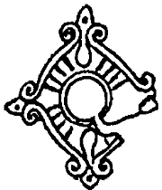

A
Abınçu: Cariye
Adrılmak: Ayrılmak
Ağırşak: Yün eğirmek için kullanılan, eğrilen ipi ağırlaştırmaya yarayan, ortası delik, taş, kemik veya ağaçtan nesne
Aka (Eke): Abla
Aksök: Soylu, ak kemikten gelen
Al etmek: Hile yapmak, aldatmak
Alkış: İyi dilek, dua
Amrak: Sevgili, sevilen
Apa: Baba, abla
Argış (Arkış): Kervan
Arık: Zayıf
Atı: Yeğen, kardeş oğlu
Ayrıksı: Başka türlü, farklı
B
Bala: Çocuk
Banlamak: Bağırmak
Ban eri: Müezzin
Barım (Vanm): Mal, servet, varlık
Bark: Ev, mezar
Bars: Pars
Batır (Batur): Yiğit, bahadır Bay: Zengin, varlıklı
Bek: Sert, sağlam
Bibi: Hala
Bilük: Okluk, sadak
Biti: Mektup, yazı
Bitig: Kitap
Bitimek: Yazmak
Bor: Boran, kar fırtınası, kasırga
Bökmek: Doymak
Borü (Böri): Kurt
Budun (Bodun): Boylar, halk
Buğra: Erkek deve
Bun: Sıkıntı, dert
Bunlu: Sıkıntılı
Bunmak: Sıkılmak
Burungu: Eski
Buzlamak (Bozlamak): Yüksek sesle, bağırarak ağlamak
C
Cebe: Silah
Cevşen: Zırh
Cidago: Atın omuz yüksekliği
Ç
Çabış (Çavuş): Komutan
Çağa: Çocuk
Çakır: Şarap
Çapan: Uzun, dış giysisi
Çapmak: Vurmak, yağmalamak, hızla at sürmek
Çaşıt: Casus
Çeri: Asker
Çıkan: Teyzeoğlu, kuzen
Çöngelmek: Kılıç, bıçak gibi kesici aletlerin körlenmesi
D
Değil: De! Söyle!
Dullamak: Atın kuyruğunu kesmek
Dün: Gece
Dün baskını: Gece baskını
E
Eğin (Eğin): Gövde, arka, vücut
El etmek: örgütlemek, örgütlü halk durumuna getirmek
Esrik: Sarhoş
Eşi: Hanım
Eşilik: Hanım olmaya, eş olmaya layık
Eze: Teyze
G
Gen: Geniş
Giyim: Giyecek, zırh
Gökçek: Güzel
Görklü: Güzel, iyi
Gün (Küng): Cariye, kadın köle
I
Irk: Fal
Is: Sahip
Isız: Sahipsiz
İ
İmrence: Herkesin imrendiği
İnal (İnel): Veliaht
İni: Erkek kardeş
İvmek: Acele etmek
K
Kamşatmak: Sarsılmak, sendelemek, gevşetmek
Karanu: Karanlık
Karasök: Soylu olmayan, kara kemikten gelen
Karavaş (Karabaş): Hizmetçi, cariye
Kargamak: Lanetlemek, beddua etmek
Kargış: Lanet
Karık: Sürekli karla kaplı yere bakmaktan dolayı gözün kamaşması
Karım: Rakip, hasım
Kaşanmak: At ve benzeri hayvanların durarak işemesi
Katıglanmak Katlanmak, üzülmek
Kendürük: Deriden yapılma, sofra olarak kullanılan yaygı
Kenger: Sakız elde edilen bir bitki, Gundelia toumefortii
Kengeşmek: Danışmak, tartışmak Kermen: İç kale
Keşür: Havuç
Kılağılamak: Kesici bir aleti yağlı, yumuşak taşla keskinleştirmek
Kılınmak: Yaratılmak, doğmak
Kırnak: Cariye
Konguz: Böcek
Korçu: Muhafız
Koşa: Çift, iki tane Kök: Gök, mavi Köp: Çok
Kösnük: Şehvetli, kızışmış
Kulan: Yaban eşeği, equus hemionus
Kulluk: Hizmet etmek
Kunçuy (Konçuy): Prenses
Kurut: Kurutulmuş yoğurt
Kuskun: Atın kuyruğu altından geçerek eyere bağlanan kayış
Kuşlamak: Kuş avlamak
Kut: Kut, talih, devlet, Tanrı’nın lütfu
Kutuz (Koduz): Kadın, cariye
Kuy: Ev, evin harem kısmı
Kuzuluk: Büyük bir tahta kapı veya perdenin ortasındaki küçük kapı
Küdegü: Güveyi
Külük (Külüg): Ünlü
Kündü: Hazarlar ve Macarlarda bir unvan
Küskü: Sıçan
M
Mengü: Sonsuz, ebedi, bengi
Muncuk: Boncuk
Munta (Bunta): Burada
N
Nöker (Nökör): Bir savaş beyini izleyen savaşçı
O
Od (Ot): Ateş
Oğuş: Boy, kabile
Oğuz: Boylar Ok: Boy
Okdaş (Ugdaş): Aynı boydan
Okumak: Çağırmak
Orun: Makam, mevki
Otça-borça: Ateş gibi, kasırga gibi
Ö
Öd: Zaman
Ödlek: Zaman
Örü durmak: Doğrulmak, ayağa kalkmak
Ötken: Geçmiş zaman
P
Polat: Çelik
Pusarık: 1. Puslu, sisli 2. Serap
Pusat: Silah
S
Sagrak: Kadeh
Sak: Uyanık, dikkatli
Sasık: Bozuk, kokmuş
Sayrılanmak: Hastalanmak
Sebinmek: Sevinmek
Sığın: Büyük geyik
Sin: Mezar
Siymek: İşemek
Sök: Kemik, soy
Süiti: Susamuru, Lutra lutra
Subaşı: Komutan, asker başı
Süngök (Sünük): Kemik
Sünmek: Esnemek
Ş
Şad: Göktürklerde bir unvan
Şar: Şehir
T
Tamgaçı: Damgacı, mühürdar
Tamu: Cehennem
Tarkınç: Huzursuz, mutsuz
Tarpan: Bir at cinsi, Equus prezewalski
Tavışgan: Tavşan, Lepus capensis
Taya: Sütanne
Telek: Kuşların büyük tüyü
Temren: Okun sivri ucu
Tigin: Prens
Toy: Ziyafet, büyük eğlence
Tutsakçı: Gardiyan
U
Uçmak: Cennet
Uğru (Ogn): Hırsız
Uguş (Uguş): Boy, kabile
Ulca: Ganimet, yağma malı
Urga: Hayvanları yakalamak için kullanılan ucu ipli uzun değnek
Urı: Erkek çocuk, oğul
Uruk (Urug, Urug): Boy
Uş: Şu, bu, işte, hemen, şimdi
Ü
Üpgük: İbibik kuşu
V
Varımlı: Mal sahibi, zengin
Y
Yabgu: Göktürklerde ve diğer Türklerde, kağandan sonra en önemli unvan
Yablak: Kötü
Yağı: Düşman
Yal: Köpek veya sığırlar için hazırlanan bulamaç şeklinde yiyecek
Yalım: Çıplak, kıraç
Yalvaç (Yalavaç, Yalabaç): Elçi, peygamber
Yancık: Eyere asılan torba
Yanış: Kilimdeki desenler
Yapınmak: Bir şeyin arkasına kapanmak, korunmak
Yarlığamak: Tanrı’nın koruması, lütfetmesi
Yarlık: Emir, ferman
Yasılmak: Yağmurda ıslanan bağırsak kirişin kullanılmaz duruma gelmesi
Yaşıl: Yeşil
Yatık: Yerleşik, ziraatçı (tembel anlamında)
Yazı: Ova Yeğrek: İyi, güzel
Yeğnilik: Hafiflik
Yeriti: Gelengi, Spermophilus xanthophyrmnus
Yış (Yiş): Ormanlı dağ
Yigil: Hasta, zayıf
Yincü: İnci
Yol: Defa, kez
Yöm: Dua, iyi dilek, fal
Yuğ: ölenin ardından yapılan törenler
Yund: At
Yükünmek: Birinin önünde eğilmek, yere kapanmak